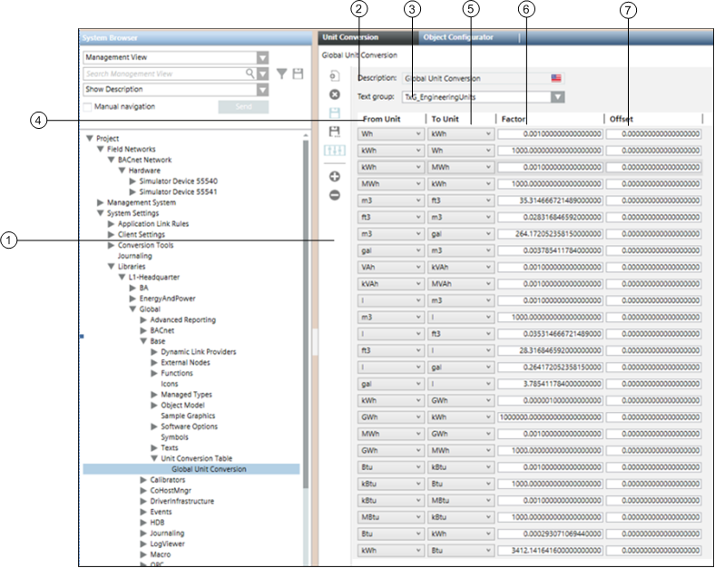

Unit Conversion Table
Unit Conversion Workspace
Selecting the Unit Conversion folder displays the unit conversion table that allows you to convert values stored in a certain unit of measurement to a different unit.

| Name | Description |
1 | Unit Conversion Toolbar | Contains buttons for performing various activities for unit conversion. |
2 | Description | Description of the unit conversion table. |
3 | Text Group drop-down list | Displays all the text groups present in the project. |
4 | From Unit | Displays the units to be converted. This list is populated with the values from the selected text group |
5 | To Unit | Displays the units to which the unit selected in the From Unit is to be converted. The list is populated with values from the selected text group. |
6 | Factor | Allows you to enter the conversion factor. For example, if you want to convert Watts to Kilowatts, the value in this field will be 0.001. |
7 | Offset | Allows you to specify the offset for each conversion pair. |
Icon | Name | Description |
| Add new table | Adds a new unit conversion table |
| Delete table | Deletes an existing table |
| Save | Saves the table with the unit conversion details |
| Save As | Saves the unit conversion table with a new name |
Add new row | Adds new rows to the unit conversion table | |
Delete selected row | Deletes the selected row from the unit conversion table |